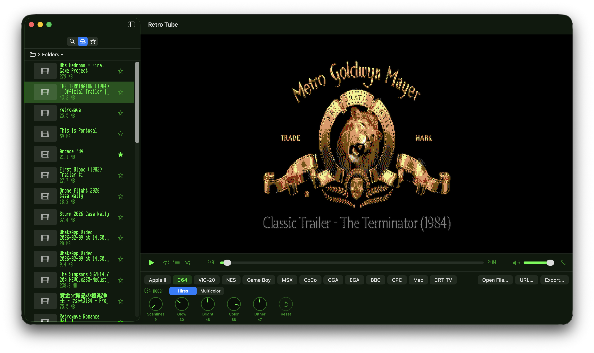
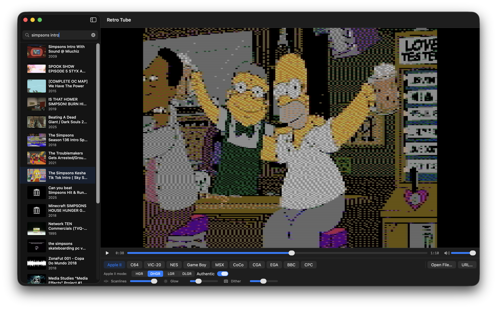
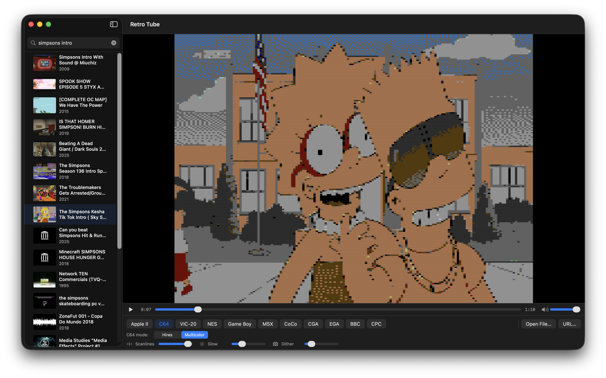
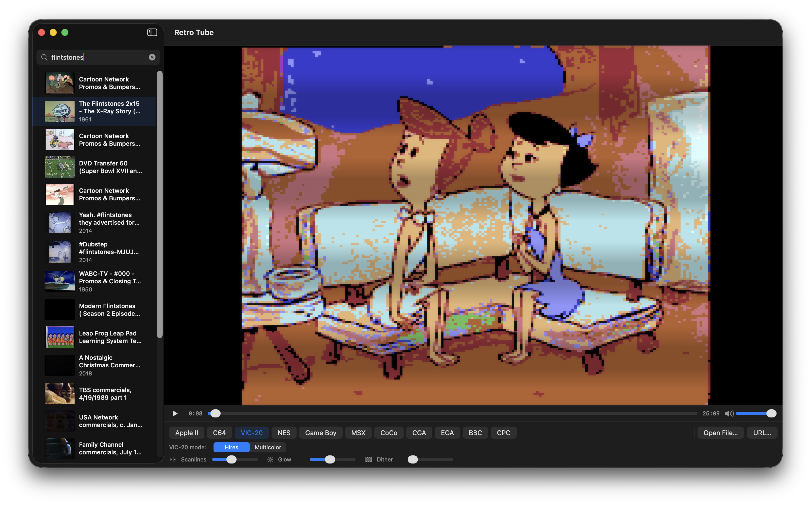
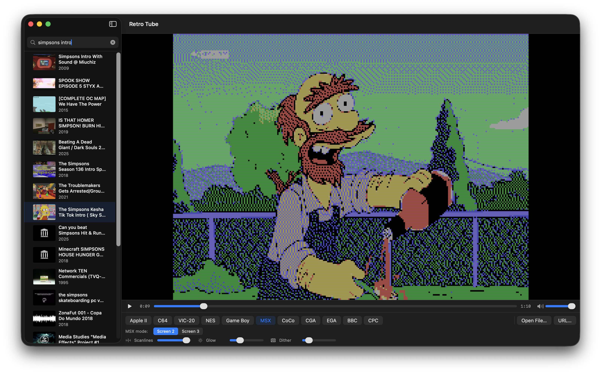
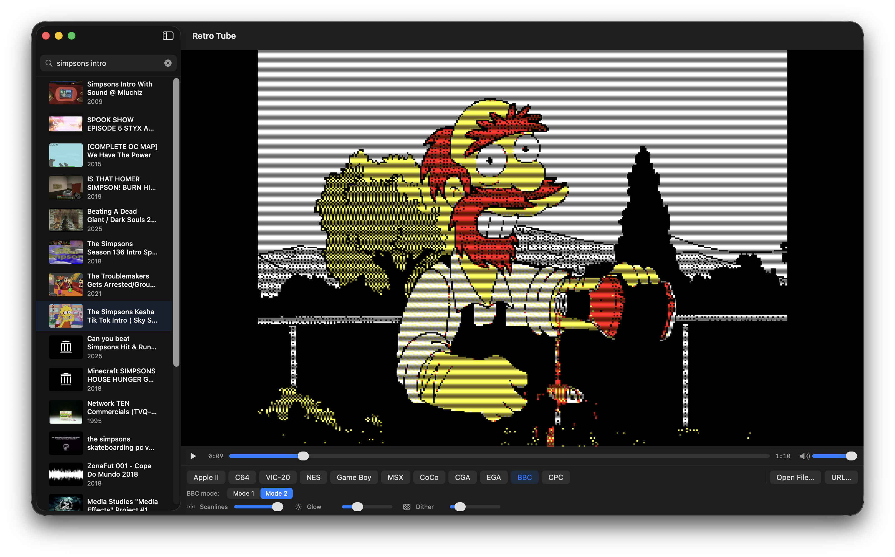
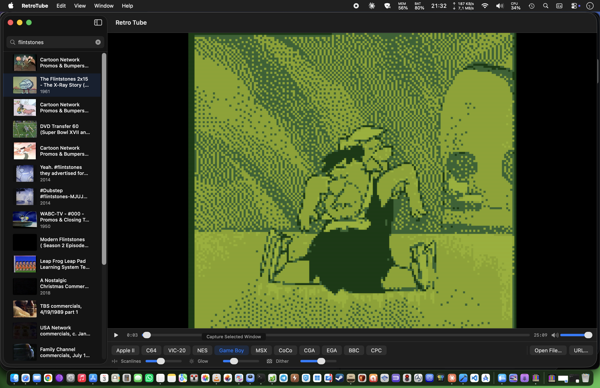

Features
11 Retro Computers
Apple II, Commodore 64, VIC-20, Game Boy, NES, MSX, Tandy CoCo, EGA, CGA, BBC Micro and Amstrad CPC — with all of their graphics modes.
Authentic Palettes
Each mode renders to its real hardware palette and native resolution — from 4 shades of Game Boy DMG green to the NES’s 54-colour set.
Authentic Apple II Encoder
Optional hardware-accurate HGR/DHGR encoder reproduces the NTSC artifact-colour rules that real Apple IIs used — complete with composite chroma blur.
CRT Effects
Adjustable scanline intensity, phosphor glow, and dithering strength — all updated live as you play.
Internet Archive Search
Search archive.org from the sidebar. Right-click any result to copy the link or open the source page in your browser.
Export to MP4
Bake any video through the chosen retro filter and export it as a standard H.264 MP4 with the original audio preserved.
How It Works
Pick a source
Search the Internet Archive, paste a direct video URL, or open a local file from your Mac.
Choose a computer
Apple II, C64, Game Boy, NES — or any of the eleven supported systems and their graphics modes.
Watch live
Every frame is downscaled to the system’s native resolution, dithered into its palette, and upscaled with crisp pixels and your chosen CRT effects.
Export if you want
Click Export to bake the filter into an MP4 file you can share, with the original soundtrack untouched.
See It In Action
The same kind of modern video, rendered through different retro graphics modes. Each system has its own native resolution, palette, and dithering character.







All Eleven Systems
Each computer ships with all of its real graphics modes. Switch between them live and watch the same frame re-quantised on the fly.
Requirements
- macOS 14 (Sonoma) or later
- Apple Silicon or Intel
- Xcode 16 to build from source
Support
Contact
Questions? Email walter.tengler@gmail.com
Internet Archive
Search results come from the public Internet Archive. All videos remain the property of their respective rights-holders.
Trademark Notice
Apple, Apple II, and Macintosh are trademarks of Apple Inc. Commodore 64 and VIC-20 are trademarks of their respective rights-holders. Game Boy and NES are trademarks of Nintendo Co., Ltd. MSX is a trademark of MSX Licensing Corporation. BBC Micro is a trademark of the British Broadcasting Corporation. Amstrad CPC is a trademark of Amstrad. All other trademarks are the property of their respective owners. Retro Tube is an independent project and is not affiliated with, endorsed by, or sponsored by any of these companies. Retro computer names are used solely to describe the visual style each rendering mode emulates.